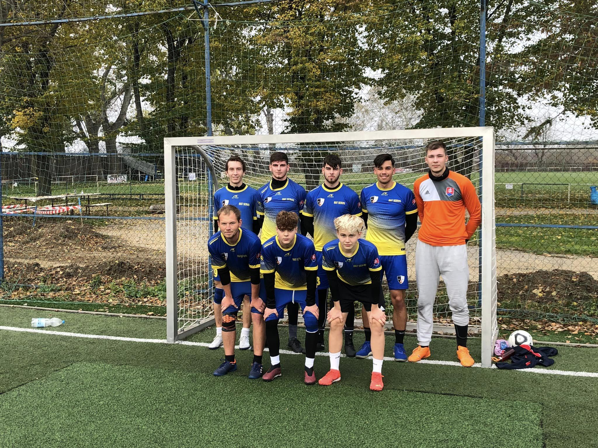

15.11.2022 Miniliga 10. a 11. kolo
Túto nedeľu prišiel očakávaný posledný zápas jesennej časti súťaže. No najprv chcem spomenúť
predchádzajúci zápas, o ktorom sa nepísal článok. Zápas proti súperovi Expotech skončil 3:3, čo nás
veľmi mrzí, keďže nám zápas či už po psychickej alebo taktickej stránke nevyšiel a nedokázali sme sa
posunúť v tabuľke vyššie. No tento nešťastný zápas sme hodili za hlavu a do posledného, tentokrát
ešte dôležitejšieho stretnutia išli s čistými hlavami, úplne pokojní, bez stresu. Naším súperom boli
chlapci z tímu Som Košičan Josta B. Očakávali sme kondične ťažší zápas, a tak to nakoniec aj bolo.
Zápas pre nás dopadol takmer perfektne. Taktika bola nastavená výborne, striedania takticky sedeli
do priebehu hry. Súper nás tlačil celý zápas, my sme sa poctivo bránili a boli sme nebezpeční takmer
z každého protiútoku. Naši najlepší strelci sa opäť dokázali niekedy až výstavne presadiť. Erik
Drobňák opäť potvrdil svoju celosezónnu formu a skóroval až štyrikrát, góly boli výstavné. Tak isto
aj Jakub Čirip, ktorý strelil 2 góly, jeden bol nádherný volej. Chlapcom sa takto darilo aj najmä
krásnym asistenciám, kedy sa chlapci (ako aj ja) nezlakomili, neskórovali sami, ale našli ich
presnými prihrávkami. Pochvalu si zaslúži aj brankár Dávid Zambori, ktorý nás držal celý zápas a bol
nepriestrelný. Zápas skončil 6:1 a gól, ktorý sme inkasovali je chyba mužstva, nie brankára. V
zhrnutí si pochvalu zaslúži celé mužstvo. Každý jeden z nás dal do toho všetko, boli sme zodpovední
a hlavne nápomocní jeden druhému. Tento zápas bol jednoznačne najlepší zápas tejto polovice sezóny.
Keď sa spätne pozrieme na priebeh jesennej časti, tak to určite nebolo dokonalé. Až do posledného
zápasu sme hľadali tú správnu taktiku. Všetci máme pocit, že posledný zápas to bolo ideálne
nastavené a mali by sme v tom pokračovať. Nachádzame sa na 7. mieste, čo je výborné , keďže sme v
elitnej 8čke tabuľky a na TOP 3 strácame len 3 body. Naši najlepší strelci po 11 zápasoch sú Erik
Drobňák (18 gólov) a Jakub Čirip (17 gólov). Erik sa nachádza v tabuľke strelcov na 3. mieste a
Jakub hneď za ním na 5. mieste. Ako nám ukázali zápasy, je čo zlepšovať a my na to máme veľa času.
Počas prestávky sa zúčastníme niekoľkých turnajov, aby sme sa začali jarnú časť oveľa lepšie ako
jesennú.
Som Košičan Josta B 1:6 FS Kerestur
Zostava: Jakub Čirip, Erik Drobňák, Matej Drobňák, Kevin Novák, Patrik Matta, Martin Šoltés, Dominik
Kolárčik
Brankár: Dávid Zambori
Góly: Erik Drobňák 4 , Jakub Čirip 2
